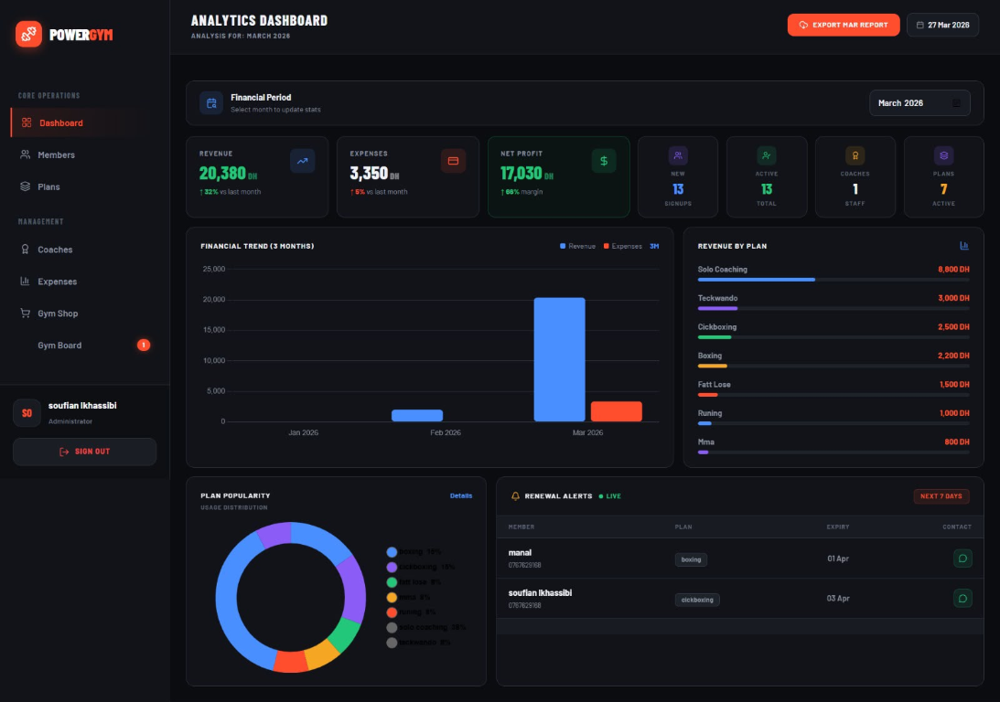
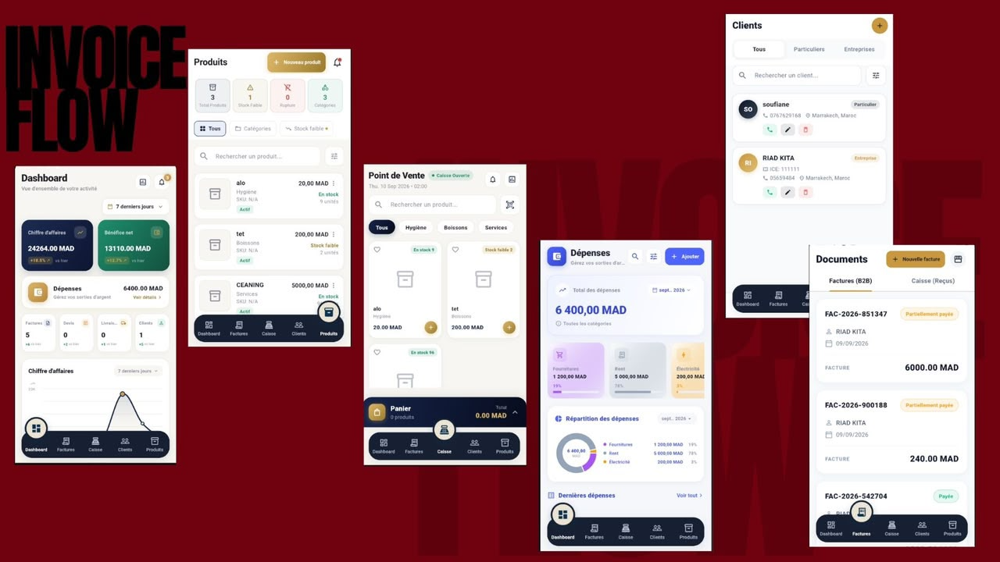
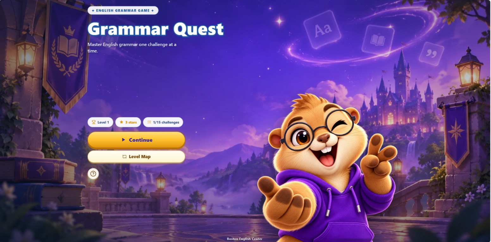
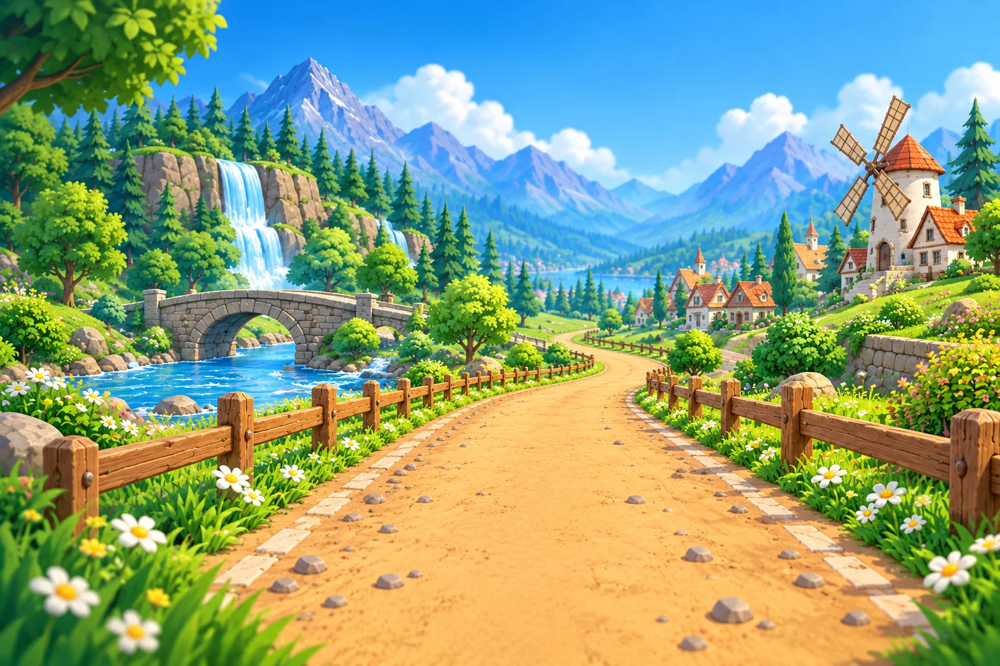
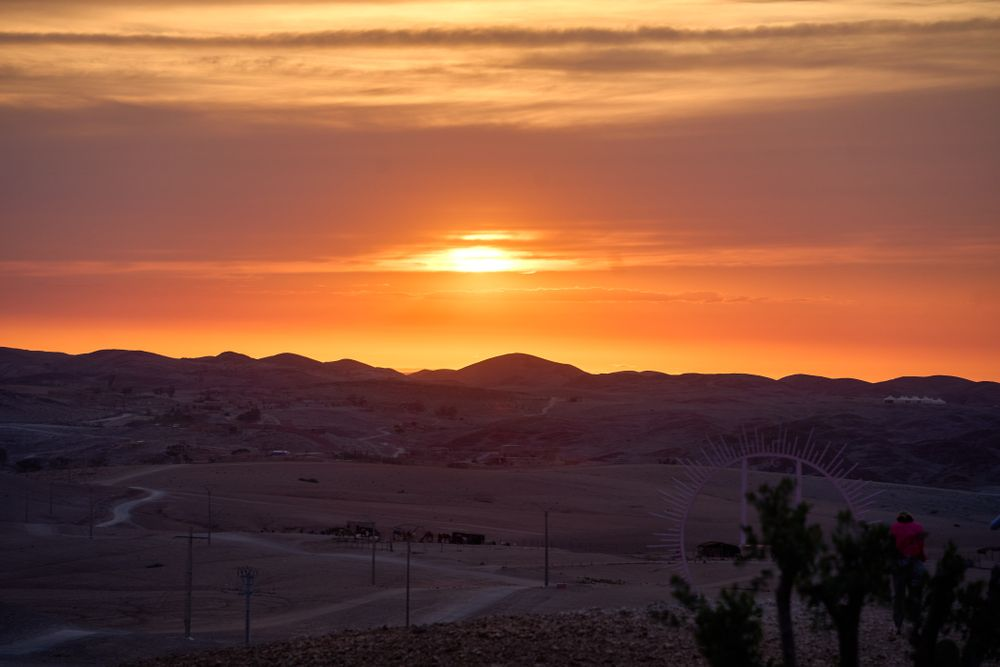
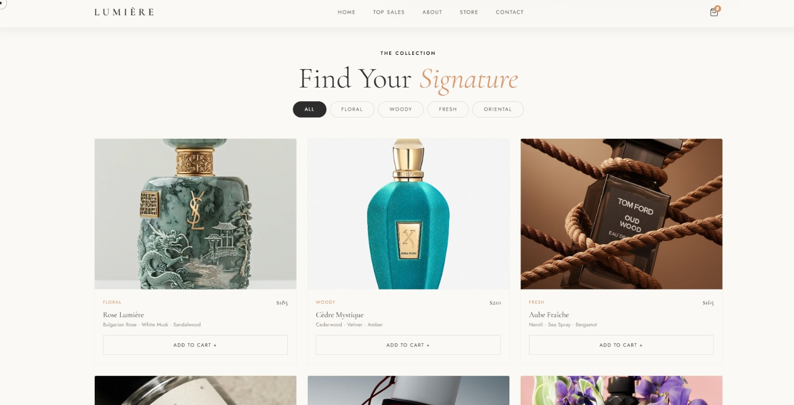
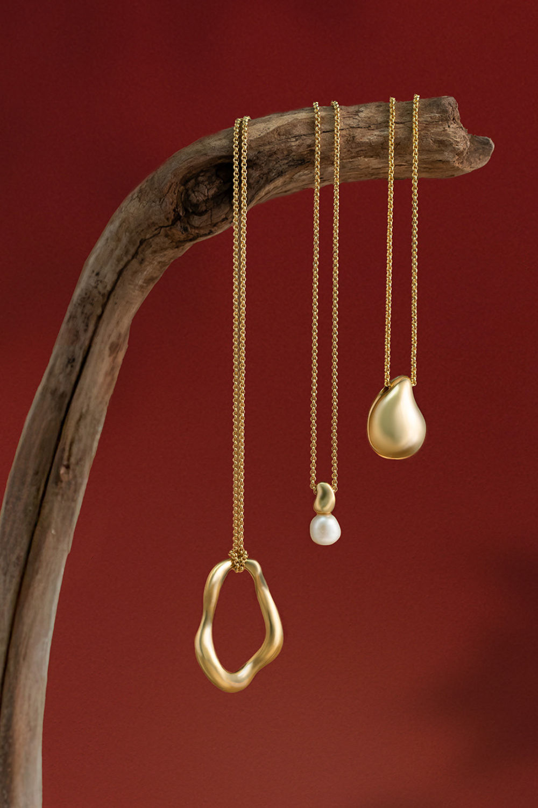
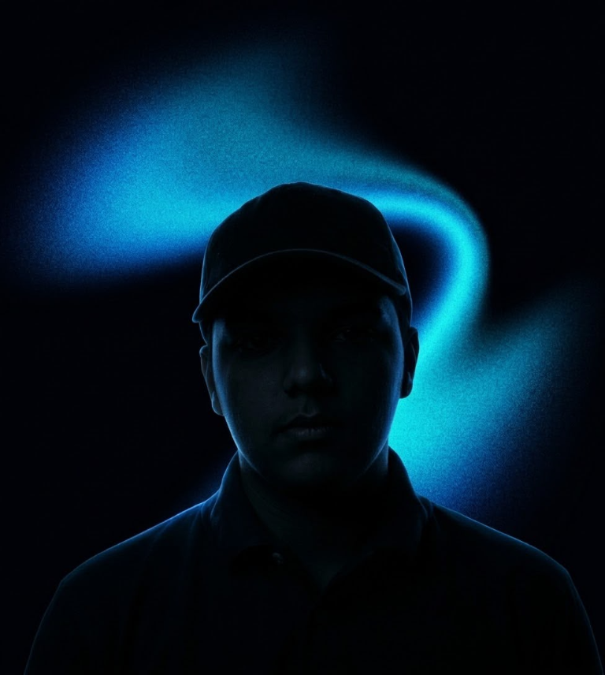

01 / 17
Explore project Business platform
PowerGym
A centralized gym management platform for members, subscriptions, payments, coaches, operations, and business analytics.
Available for new opportunities
Soufiane El Khassibi / Full-stack developer
Thoughtful interfaces. Reliable systems. A little unexpected magic. I turn ideas into digital experiences people enjoy using.
01 Selected work
Useful products, playful experiments, and the details that make them feel alive. Pick a card. There’s more behind it.

Business platform
A centralized gym management platform for members, subscriptions, payments, coaches, operations, and business analytics.

Mobile product
A Flutter mobile app for helping businesses and independent professionals manage invoices with a clearer digital workflow.
Web experience
A landing-page project with a people-first visual direction and a live web preview.

Interactive game
An interactive, grammar-focused game that turns English practice into a playful visual experience.

Interactive game
A browser-based English-learning runner that combines quick decisions with a colorful game world.

Travel website
A tourism website with destination imagery and a live experience to explore.
Portfolio archive
A project from my portfolio archive.
Portfolio archive
A project from my portfolio archive.
Portfolio archive
An English-learning platform contribution from my project collection.
Portfolio archive
A word-game project from my interactive collection.
Portfolio archive
An agency website concept from my project collection.
Engineering experiments
Framework experiments exploring Python and Django.
Engineering experiments
Laravel experiments around SaaS-style product development.
Automation experiments
Experiments with connected tools and automated workflows.

Storefront
A perfume storefront project with an available visual preview and published website.
Storefront
A cap-store website with a product-led visual presentation and live preview.

Storefront
A jewelry storefront project with product imagery and a published web experience.
From business tools to a little bit of play.
02 Beyond the screen
I care about how a product works, how it feels, and the people on the other side of the screen.
My journey began with questions about how digital products are made. Today, I turn ideas into useful, responsive web applications with clean code and thoughtful interfaces.
I work with Laravel, PHP, MySQL and JavaScript. From authentication and APIs to dashboards and business workflows, I connect the pieces into a complete product.
Client projects and teamwork taught me to listen, solve the right problem and welcome feedback. I’m continuing to explore deployment, automation and AI-powered applications.
Learn continuously.
Build with purpose.
Make the details matter.
Professional experience
Private company
Digital content, publishing and brand communication across social platforms.
Traditional retail
Customer service, stock management and everyday retail operations.
Education
Software Development · ESSET, Morocco
2024 — PresentMorocco · 2023
From first idea to the final detail
Explore the way I move from a question to something you can actually use.
Understand the people, the problem, and what a useful solution should do.
03 The toolkit
The right tool for the right problem. A connected set of technologies, from the first interface to the final deployment.
The part people see and feel.
The logic that connects everything.
The practice behind the product.
04 Notes from the build
The useful lessons happen between the first idea and the finished product. These are the topics I’m exploring.
Architecture / backend
Practical notes on Laravel, MVC, data models, authentication, and keeping business logic maintainable as a product evolves.
Article in progressProduct / SaaS
Lessons from building dashboards, management tools, and SaaS experiments around the everyday needs of real users.
Article in progressMobile / AI / practice
Experiments with Flutter, AI integration, automation, deployment, and the engineering habits that help ideas ship reliably.
Article in progressSmall steps. Real progress.
1,231 contributions in the supplied snapshot
Supplied snapshotActivity from the screenshot you supplied. Live data loads when available.
Explore a square to see its activity.
05 Let’s make something matter
Have an idea, a project, or a challenge worth solving? Let’s turn it into something people love to use.
sofianlkhassibi10@gmail.comMarrakech, Morocco · Open to new opportunities
